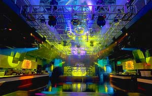
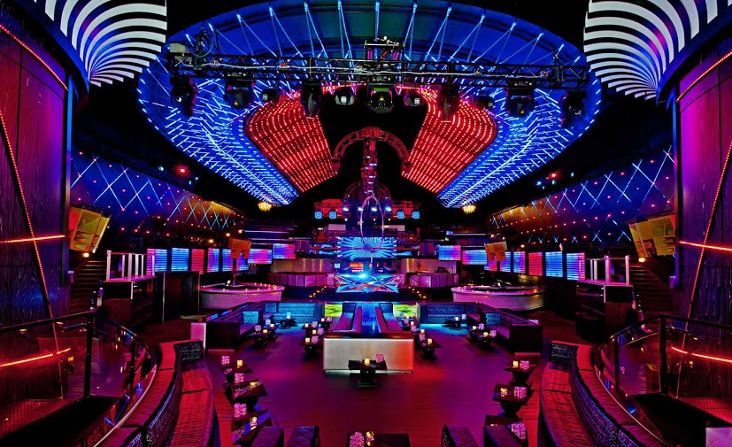
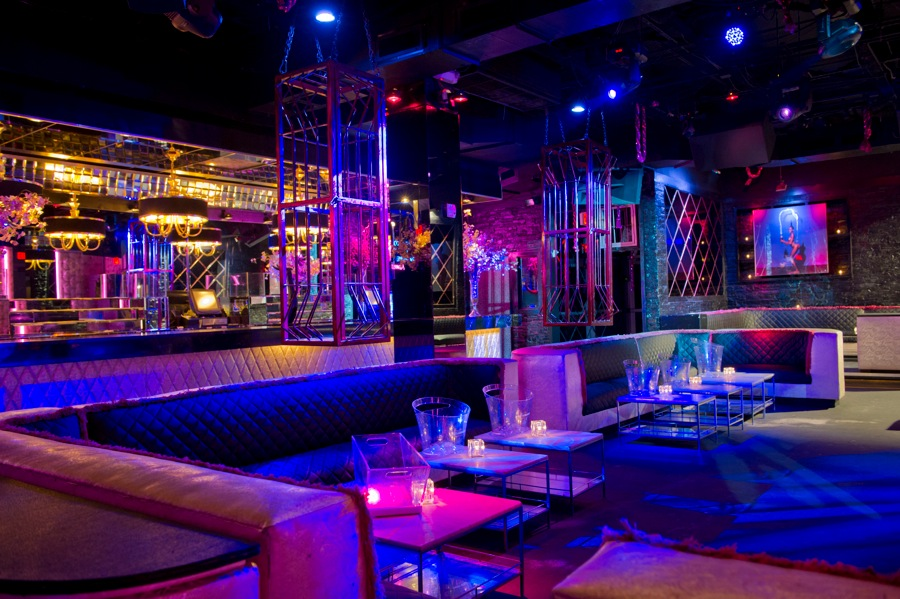

Usually when I go down to Miami it's not a three day event. I attend parties both for Winter Music Conference and Miami Music Week. But thats a whoooole nother concept. Basially, MMC AND WMC through after parties and events during the entire month of March. Thats why I call it March Madness. Because of this, there are always after parties after Ultra. If you go down to Miami, I reccomend you check some of these pool parties out, that is only if you are 21 and up. Heres just a few clubs I'd check out depending on your preference and how late you want to be partying too.
AFTER HOURS-TIME TO GET WEIRD: CLUB SPACE
This current year, 2013 Space is celebrating thirteen years in the business. This club is located downtown Miami and is a 24 hour club-meaning that DJ's spin sets from 12 am to 12 am. NUTS. On Saturday it opens at 10 pm to 5:30 am and on Sundays from 6 am to 4 pm. Basically, the club closes once the last person stops dancing. There are two main rooms and then my favorite part, the outside Terrace which really comes to life in the early morning hours. Come here if you want to party till the sun goes down. Dress code doesn't really matter here. 21 and up only though!
Lets get Fancy: Mansion
Mansion. I could go on and on. They just renivated the entire night club and it looks incredible. A little more pricey than Space, but its worth it. The Opium group runs this club, as well as other Miami night clubs such as SET,Mokai and Cameo. The hours are from Wednesday to Saturday 11 pm to 5 am. Great club, but it is a little up-scale and you have to dress to impress. If the bouncer thinks you aren't wearing appropriate attire he will deny you at the door.
Keep it Intimate: Mokia
Mokia is one of my favorite clubs on Southbeach, also run by the Opium Group. It isn't as big as Mansion or Space but thats what I like about it. If you and your friends want to get bottle service, here it the place to get it- it's cheaper than at most other night clubs. Mokia is still upscale though, and the dresscode is still strictly enforced. I always have a great time here